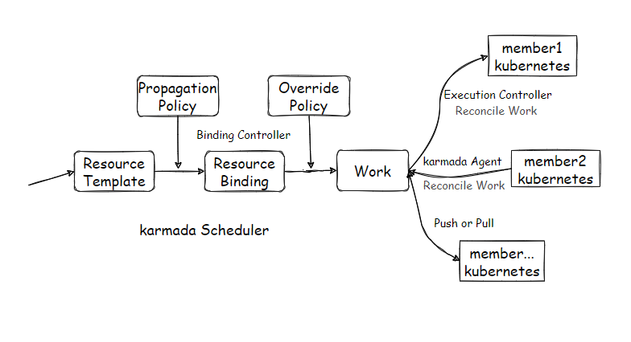
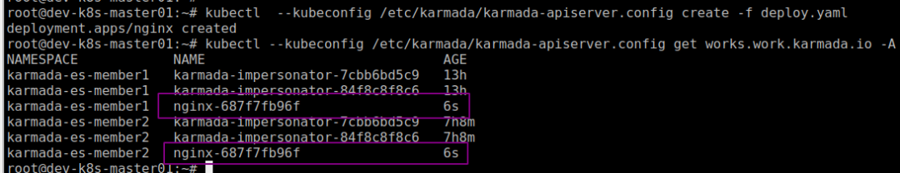
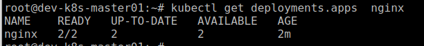
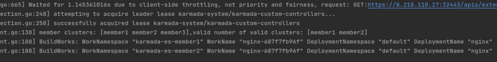
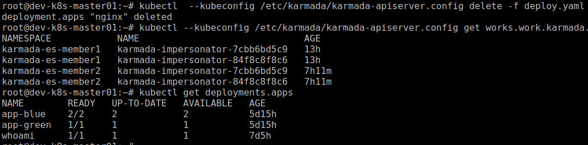
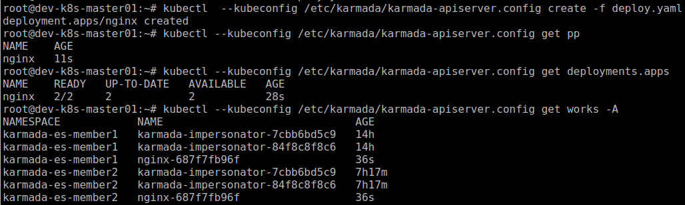

Karmada 有趣的玩法：自定义控制器
控制器是 Kubernetes 的核心功能之一，它确保资源对象处于并保持由声明定义的所需状态，如果资源偏离了期望的状态，就会触发控制器执行必要的操作，将资源对象的当前状态恢复为期望的状态。同样，Karmada 也内置一组控制器，运行在 karmada controller manager 中，这些内置的控制器提供了 karmada 的核心功能。
在面对复杂多变的应用场景和个性化需求时，因为内置的控制器通用性，往往满足不了业务要求，这时候我们就需要开发我们自己的控制器了。接下来笔者以一个小的需求为例，来实现一个简单的 karmada 控制器。
需求和设计
我们在使用 Karmada 的过程中发现，创建了资源对象后，还需要创建对应的传播策略，Karmada 才会把资源分发到成员集群，这样显得没那么简便了。如果像内置的 Namespace Controller 一样全局自动同步，那又显得不可控。所以笔者的想法是半自动式，通过 Annotations 指定成员集群，创建资源对象后，由一个自定义的控制器根据 Annotations 的指定成员集群进行把分发。
我们简单回顾下 Karmada 工作的大致过程

以创建 Deployment 为例
- 创建常规的 Kubernetes Deployment 对象；
- 然后创建 Karmada PropagationPolicy，它定义了 Deployment 需要被调度到哪些成员集群；
- 接着 Karmada 根据策略进行调度和资源绑定，Override Policy 可以对结果进行修改；
- 最后 Karmada 会生成并在成员集群对应的 Namespace 中创建 Work 对象，Execution Controller(Push 模式)和 Karmada Agent(Pull 模式) 不断 Reconcile Work 对象，同步 Deployment 的状态。
我们可以实现一个自定义控制器直接渲染并创建 Work 对象，让 Execution Controller 和 Karmada Agent 去 Reconcile。可能有些读者朋友觉得，哎呀，这操作太骚太粗暴了，ok，那我们也可以再实现一种方式，就是创建 PropagationPolicy 对象，然后交给 Karmada 去调度分发。
控制器管理器
为了方便管理自定义的控制器，我们先实现一个控制器管理器(Controller Manager) 对自定义的控制器进行管理。笔者不推荐把自定义的控制器注册到 Karmada 的 Controller Manager 中。
沿用 Kubernetes 的风格，使用 cobra 库构建控制器管理器入口
func NewCustomControllerManagerCommand(ctx context.Context) *cobra.Command {
opts := options.NewOptions()
cmd := &cobra.Command{
Use: "karmada-custom-controller-manager",
Long: `karmada custom controller manager`,
RunE: func(cmd *cobra.Command, args []string) error {
if err := opts.Validate(); err != nil {
return err
}
return Run(ctx, opts)
},
}
klog.InitFlags(flag.CommandLine)
cmd.Flags().AddGoFlagSet(flag.CommandLine)
opts.AddFlags(cmd.Flags())
return cmd
}
controller-runtime 库可以帮助我们快速实现一个控制器管理器
func Run(ctx context.Context, opts *options.Options) error {
config, err := ctrl.GetConfig()
if err != nil {
return err
}
initConfig(config)
mgr, err := ctrl.NewManager(config, ctrl.Options{
Scheme: runtime.NewScheme(),
SyncPeriod: &opts.ResyncPeriod.Duration,
LeaderElection: opts.LeaderElection.LeaderElect,
LeaderElectionID: opts.LeaderElection.ResourceName,
LeaderElectionNamespace: opts.LeaderElection.ResourceNamespace,
LeaderElectionResourceLock: opts.LeaderElection.ResourceLock,
HealthProbeBindAddress: net.JoinHostPort(opts.BindAddress, strconv.Itoa(opts.SecurePort)),
MetricsBindAddress: opts.MetricsBindAddress,
})
if err != nil {
return fmt.Errorf("new controller manager failed: %v", err)
}
if err := mgr.AddHealthzCheck(CheckEndpointHealthz, healthz.Ping); err != nil {
return fmt.Errorf("failed to add %q health check endpoint: %v", CheckEndpointHealthz, err)
}
if err := mgr.AddReadyzCheck(CheckEndpointReadyz, healthz.Ping); err != nil {
return fmt.Errorf("failed to add %q health check endpoint: %v", CheckEndpointReadyz, err)
}
if err := deployment.AddToManager(mgr); err != nil {
return err
}
if err := mgr.Start(ctx); err != nil {
return fmt.Errorf("controller manager exit: %v", err)
}
return nil
}
自定义控制器
New 一个 Controller 并加入到控制器管理器中。值得注意的是，需要把 Karmada 的资源注册到控制器管理器，否则控制器管理器会找不到 Karmada 的资源。
// Controller reconciles a ContainerSet object
type Controller struct {
client.Client
scheme *runtime.Scheme
recorder record.EventRecorder
dynamicClient dynamic.Interface
}
// NewController returns a new Controller
func NewController(mgr manager.Manager, dynamicClient dynamic.Interface) *Controller {
return &Controller{
Client: mgr.GetClient(),
scheme: mgr.GetScheme(),
recorder: mgr.GetEventRecorderFor(ControllerName),
dynamicClient: dynamicClient,
}
}
// AddToManager create controller and register to controller manager
func AddToManager(mgr manager.Manager) error {
// Setup Scheme for k8s appv1 resources
if err := appsv1.AddToScheme(mgr.GetScheme()); err != nil {
return err
}
// Setup Scheme for karmada clusterv1alpha1 resources
if err := clusterv1alpha1.AddToScheme(mgr.GetScheme()); err != nil {
return err
}
if err := policy1alpha1.AddToScheme(mgr.GetScheme()); err != nil {
return err
}
// Setup Scheme for karmada workv1alpha1 resources workv1alpha1
if err := workv1alpha1.AddToScheme(mgr.GetScheme()); err != nil {
return err
}
dynamicClient, err := dynamic.NewForConfig(mgr.GetConfig())
if err != nil {
return err
}
return NewController(mgr, dynamicClient).SetupWithManager(mgr)
}
设置控制器管理器从 Karmada ApiServer With Deployment 资源的事件(Event)
func (c *Controller) SetupWithManager(mgr manager.Manager) error {
predicate := predicate.Funcs{
CreateFunc: func(e event.CreateEvent) bool {
return true
},
UpdateFunc: func(e event.UpdateEvent) bool {
return true
},
DeleteFunc: func(event.DeleteEvent) bool {
return true
},
// GenericEvent用来处理未知类型的Event，比如非集群内资源事件，一般不会使用。
GenericFunc: func(event.GenericEvent) bool {
return false
},
}
return ctrl.NewControllerManagedBy(mgr).For(&appsv1.Deployment{}).WithEventFilter(predicate).Complete(c)
}
控制器管理器会监视资源的创建/更新/删除事件，并触发 Reconcile 函数作为响应，不断地对比资源对象的期望状态和实际状态。所以我们的业务逻辑都是在 Reconcile 函数中实现的
func (c *Controller) Reconcile(ctx context.Context, request ctrl.Request) (ctrl.Result, error) {
}
生成的 work 对象需要取消 OwnerReferences 字段的声明，因为 work 对象是创建在成员集群对应的 Namespace 中，和 Deployment 不在一个 Namespace。OwnerReferences 只支持集群级别的资源和同 Namespace 级别的资源。反之就会因为找不到 Owner 被 Kubernetes 的 GC 控制器清理掉。
func (c *Controller) buildWorks(deployment *appsv1.Deployment, clusters []string) error {
uncastObj, err := runtime.DefaultUnstructuredConverter.ToUnstructured(deployment)
if err != nil {
klog.Errorf("Failed to transform deployment %s. Error: %v", deployment.GetName(), err)
return nil
}
deploymentObj := &unstructured.Unstructured{Object: uncastObj}
for _, cluster := range clusters {
workNamespace, err := names.GenerateExecutionSpaceName(cluster)
if err != nil {
klog.Errorf("Failed to generate execution space name for member cluster %s, err is %v", cluster, err)
return err
}
workName := names.GenerateWorkName(deploymentObj.GetKind(), deploymentObj.GetName(), deploymentObj.GetNamespace())
objectMeta := metav1.ObjectMeta{
Name: workName,
Namespace: workNamespace,
Finalizers: []string{karmadautil.ExecutionControllerFinalizer},
/* OwnerReferences: []metav1.OwnerReference{
*metav1.NewControllerRef(deployment, deployment.GroupVersionKind()),
},*/
Labels: map[string]string{fmt.Sprintf("bootstrapping.karmada.io/%s", deployment.Name): "true"},
}
klog.Infof("BuildWorks: WorkNamespace %q WorkName %q DeploymentNamespace %q DeploymentName %q", objectMeta.Namespace, objectMeta.Name, deployment.Namespace, deployment.Name)
karmadautil.MergeLabel(deploymentObj, workv1alpha1.WorkNamespaceLabel, workNamespace)
karmadautil.MergeLabel(deploymentObj, workv1alpha1.WorkNameLabel, workName)
if err = helper.CreateOrUpdateWork(c.Client, objectMeta, deploymentObj); err != nil {
return err
}
}
return nil
}
如上原因，所以还需要实现一个办法，在删除 deployment 对象后，然后通过标签找到并删除 work 对象。这里笔者使用 Dynamic Client 的方式实现。
func (c *Controller) removeWorks(request ctrl.Request, clusters []clusterv1alpha1.Cluster) error {
for _, cluster := range clusters {
workNamespace, err := names.GenerateExecutionSpaceName(cluster.Name)
if err != nil {
klog.Errorf("Failed to get namespace of member cluster %s. err: %v", cluster, err)
return err
}
worksList, err := c.dynamicClient.Resource(workGVR).Namespace(workNamespace).List(context.TODO(), metav1.ListOptions{
LabelSelector: fmt.Sprintf("bootstrapping.karmada.io/%s", request.Name),
})
if err != nil {
return nil
}
if len(worksList.Items) == 0 {
return nil
}
for _, work := range worksList.Items {
if err := c.dynamicClient.Resource(workGVR).Namespace(workNamespace).Delete(context.TODO(), work.GetName(), metav1.DeleteOptions{}); err != nil {
continue
}
klog.Infof("Delete cluster %q namespace %q deployment %q work successful.", cluster.Name, request.Namespace, request.Name)
}
}
return nil
}
控制器管理器 With 到删除 Deployment 对象的事件后触发调用 Reconcile 函数，所以我们需要在 Reconcile 函数中实现完成对 work 对象的删除动作。
// 如果找不到 deployment ，则认为 deployment 已经删除，则删除 work
if err := c.Client.Get(ctx, request.NamespacedName, deployment); err != nil {
if apierrors.IsNotFound(err) {
klog.Warningf("Namespace %s %v", request.Namespace, err)
if err := c.removeWorks(request, clusterList.Items); err != nil {
klog.Errorf("delete namespace %q deployment %q work failed. err: %v", request.NamespacedName, request.Name, request.String(), err)
return ctrl.Result{}, err
}
return ctrl.Result{}, nil
}
return ctrl.Result{Requeue: true}, err
}
// 通过 DeletionTimestamp 的值判断 deployment 状态，非空时删除 work
if !deployment.DeletionTimestamp.IsZero() {
if err := c.removeWorks(request, clusterList.Items); err != nil {
klog.Errorf("delete namespace %q deployment %q work failed. err: %v", request.NamespacedName, request.Name, request.String(), err)
return ctrl.Result{Requeue: true}, err
}
return ctrl.Result{}, nil
}
现在实现另外一种方式，即创建 PropagationPolicy。这里使用了一个简单的资源模板，声明了 OwnerReferences 字段，Deployment 删除后，等待 Kubernetes 的 GC 控制器删除即可。因为在同一个 Namespace，所以我们什么都不需要做。
创建 PropagationPolicy 对象使用控制器管理器的 controllerutil 库。
// buildPropagationPolicy create PropagationPolicy
func (c *Controller) buildPropagationPolicy(deployment *appsv1.Deployment, clusters []string) {
pp := &policy1alpha1.PropagationPolicy{
TypeMeta: metav1.TypeMeta{
APIVersion: policy1alpha1.GroupVersion.String(),
Kind: "PropagationPolicy",
},
ObjectMeta: metav1.ObjectMeta{
Name: deployment.Name,
Namespace: deployment.Namespace,
OwnerReferences: []metav1.OwnerReference{
*metav1.NewControllerRef(deployment, deployment.GroupVersionKind()),
},
},
Spec: policy1alpha1.PropagationSpec{
ResourceSelectors: []policy1alpha1.ResourceSelector{
{
APIVersion: deployment.APIVersion,
Kind: "Deployment",
Name: deployment.Name,
Namespace: deployment.Namespace,
},
},
Placement: policy1alpha1.Placement{
ClusterAffinity: &policy1alpha1.ClusterAffinity{
ClusterNames: clusters,
},
ReplicaScheduling: &policy1alpha1.ReplicaSchedulingStrategy{
ReplicaDivisionPreference: policy1alpha1.ReplicaDivisionPreferenceWeighted,
ReplicaSchedulingType: policy1alpha1.ReplicaSchedulingTypeDivided,
WeightPreference: &policy1alpha1.ClusterPreferences{
StaticWeightList: []policy1alpha1.StaticClusterWeight{
{
TargetCluster: policy1alpha1.ClusterAffinity{
ClusterNames: clusters,
},
Weight: 1,
},
},
},
},
},
},
}
result, err := controllerutil.CreateOrUpdate(context.TODO(), c.Client, pp, func() error { return nil })
if err != nil {
klog.Errorf("Failed transform PropagationPolicy %s. err: %v", pp.GetName(), err)
return
}
if result == controllerutil.OperationResultCreated {
klog.Infof("Namespace %q Create PropagationPolicy %q successfully.", pp.GetNamespace(), pp.GetName())
} else if result == controllerutil.OperationResultUpdated {
klog.Infof("Namespace %q Update PropagationPolicy %q successfully.", pp.GetNamespace(), pp.GetName())
} else {
klog.V(3).Infof("Namespace %q Update PropagationPolicy %q is up to date.", pp.GetNamespace(), pp.GetName())
}
}
测试
现在我们已经实现了一个自定义的控制器，可以进行测试了。先测试第一种方式，自定义控制器直接创建 work 对象。
apiVersion: apps/v1
kind: Deployment
metadata:
name: nginx
annotations:
bootstrapping.karmada.io/deployments-global: "false"
bootstrapping.karmada.io/deployments-members: "member1,member2,member3"
bootstrapping.karmada.io/deployments-force: "true"
labels:
app: nginx
spec:
replicas: 2
selector:
matchLabels:
app: nginx
template:
metadata:
labels:
app: nginx
spec:
containers:
- image: docker.io/library/nginx:1.21.1-alpine
name: nginx
ports:
- containerPort: 80
protocol: TCP
name: http
创建 deployment 后，Controller 创建 work 成功 
Execution Controller 和 Karmada Agent Reconcile Work 对象也正常。 
Controller 日志 
删除 deployment 后，work 也正常删除 
测试第二种方式，控制器创建 PropagationPolicy 对象，deployments-force 改成 false 即可。
annotations:
bootstrapping.karmada.io/deployments-global: "false"
bootstrapping.karmada.io/deployments-members: "member1,member2,member3"
bootstrapping.karmada.io/deployments-force: "false"
创建 deployment 
如您所见，自定义的 Controller 可以正常工作。
最后
因为 Karmada 兼容 Kubernetes，可以使用 Kubernetes 一系列的库和工具，Karmada 遵循了 Kubernetes 的风格，对于熟悉 Kubernetes 的朋友来说相当的友好，操作的资源对象和逻辑只是变成 Karmada 的而已。
文中也只是笔者实现自定义控制器的一种方式，通往罗马的一条小道而已，这个控制器的功能也比较简单，很多方面也没有考量，仅供参考。如果各位读者朋友有更 cool 更有趣的控制器实现，也欢迎到 Karmada 社区分享 :)
Karmada 地址 https://github.com/karmada-io/karmada
文章中的源码： https://github.com/prodanlabs/karmada-examples